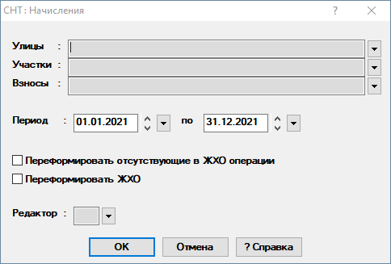
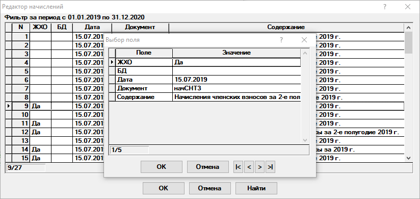
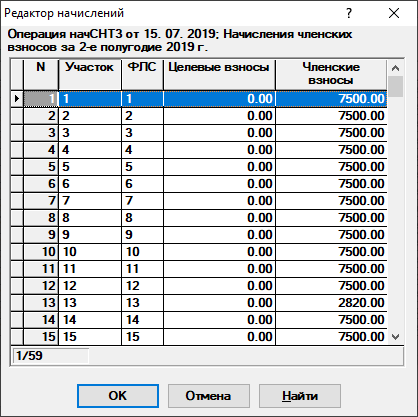

Редактор исходных остатков, начислений, оплат и возвратов.
Данный диалог позволяет вносить и редактировать суммы исходных остатков, начислений, оплат и возвратов(рис. 1).

Рис. 1. Окно операции|
|
Диалог содержит графы множественного выбора. Подробное описание работы с данными графами находится тут. |
Рассмотрим поля, доступные для заполнения:
-
Улицы — выбираются улицы, по которым необходимо вывести таблицу начислений или оплат. Возможен выбор произвольного количества улиц. Если оставить графу пустой, то отбор будет осуществляться по всем улицам.
-
Участки — выбираются участки, по которым необходимо вывести таблицу начислений или оплат. Возможен выбор произвольного количества участков. Если оставить графу пустой, то отбор будет осуществляться по всем участкам.
-
Взносы — выбираются взносы, по которым необходимо вывести таблицу начислений или оплат. Возможен выбор произвольного количества взносов. Если оставить графу пустой, то отбор будет осуществляться по всем взносам.
-
Период - указывается период, за который будут отобраны записи.
-
Переформировать отсутствующие в ЖХО операции - указывается при необходимости переформирования отсутствующих в ЖХО операций.
-
Переформировать ЖХО - указывается при необходимости переформирования ЖХО.
-
Редактор — открывается редактор начислений или оплат. Откроется список операций удовлетворяющих указанному фильтру (рис. 2).

Рис. 2. Редактор начислений или оплатВ этом списке можно добавлять, редактировать и удалять операции.
Для просмотра выбранной операции в ЖХО необходимо нажать на в поле ЖХО.
Для просмотра и редактирования операции в БД необходимо нажать на в поле БД. Отобразится содержимое выбранной операции (рис. 3).

Рис. 2. Редактор начислений или оплатУдаление операции приводит к её удалению в ЖХО.
После внесения всех данных нажмите на кнопку ОК и внесенные изменения будут сохранены.